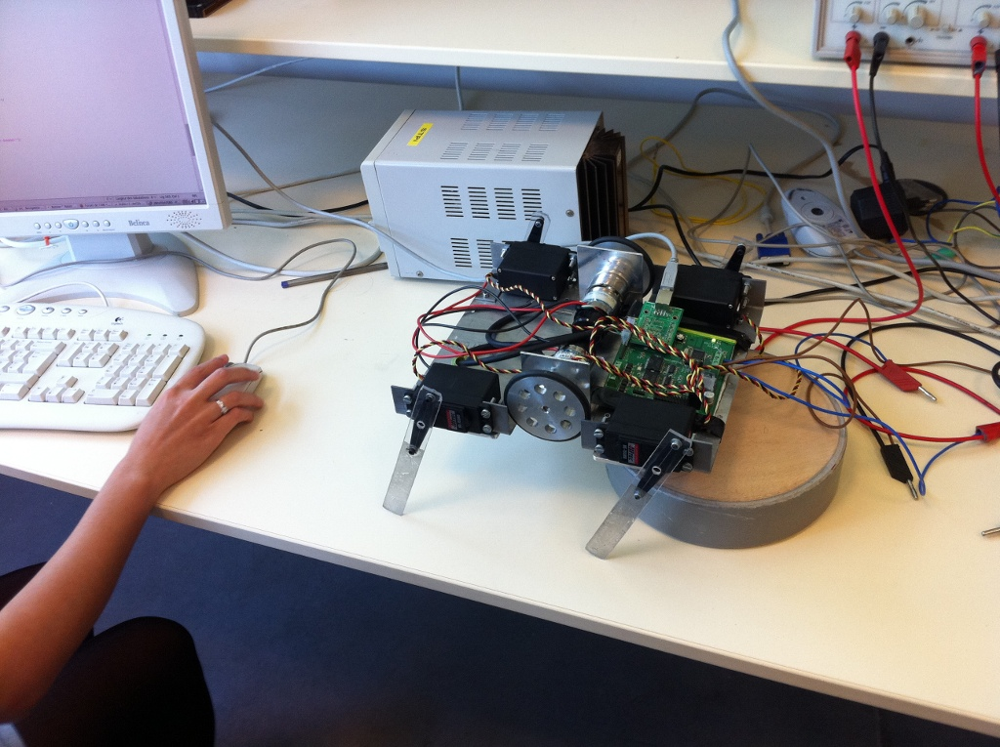

L'Association Robotique INSA (A.R.I.) est une association suivant la loi 1901. Cette association a pour but de démocratiser les nouvelles technologies autours d'une passion commune : la Robotique. Cette association constituée d'une dizaine de personnes posséde une majorité d'étudiants. L'objectif principale de cette association est la participation à la coupe de France de Robotique.
Nous voilà avec un nouveau site web! Au menu un portail propulsé par Drupal et un forum lui géré par phpbb. A ne pas utiliser avec modération !
Hengstler est l'un des leaders européens dans le domaine de la fabrication de composants de comptage et de commande pour l'automatisation. Il nous fournira des codeurs incrémentaux RI 32. Cela va avoir pour impact direct d'améliorer notre précision sur la position du robot. Grâce à cela, nos actions seront mieux contrôlées et pourront être plus rapides. Nous remercions Hengstler pour la confiance qu'il nous porte. Site web : http://www.hengstler.com/
